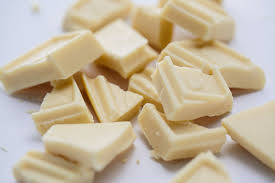
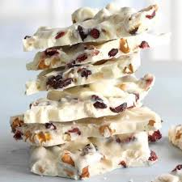
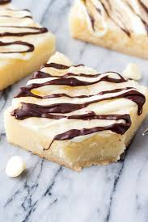

What is White Chocolate?
What is white chocolate? White chocolate is made of cocoa butter that comes from the cocoa bean, which all chocolate is made from. It is known by its pale ivory color and buttery, milky sweet taste. White chocolate’s luscious creaminess makes it the perfect match for ice cream.
Is white chocolate still a sweet mystery to you? Keep reading to learn more about this delicious indulgence, like how is white chocolate made and is white chocolate chocolate.
How is White chocolate made?
Creating perfect chocolate is an art form and only highly trained chocolatiers can achieve the signature white chocolate taste. So, how is white chocolate made?
- Chocolatiers gently melt the cocoa butter.
- Then they fold in milk powders, sugar and other ingredients to create the perfect white chocolate.
- Some chocolatiers add spices such as ginger or cinnamon to their white chocolate for a richer, more decadent taste.
Magnum white chocolate is blended with vanilla flavor for the perfect sweetness.
Is White Chocolate Chocolate?
Because white chocolate has such a unique taste and appearance compared to dark and milk chocolate, many people wonder “is white chocolate chocolate?” While white chocolate is made with cocoa butter from the cocoa bean, like all other chocolates, it does not contain cocoa nibs. Because there are no cocoa solids in white chocolate, it is not considered chocolate by some standards. But with real cocoa butter and a deliciously sweet taste, white chocolate is always chocolate to us.
Make your white chocolate extra special
White chocolate is becoming the go-to indulgence. While many chocolate treats are made of milk and dark chocolate, white is the extra special choice.
Top chefs are using white chocolate to add a sweeter twist to desserts. Add a dash of spice to white chocolate cupcakes with cardamom. Use pink peppercorns or saffron in white chocolate truffles.
Get Playful
The sweet and creamy notes of white chocolate bring back memories of childhood — those playful days and mischievous moments you’ll want to relive again and again. White chocolate is always made better when paired with friends, and often prompts impromptu rooftop parties and dancing like nobody is watching. So, go ahead, unleash your spontaneous playful side with white chocolate.
